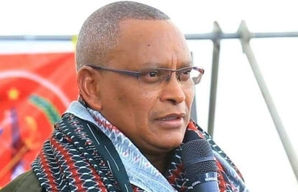

21 ሚያዝያ 2022
ደብረጽዮን ገብረሚካኤል (ዶ/ር) ደርግን ለመገርሰስ የተካሄደውን ትግል የተቀላቀሉት የአዲስ አበባ ዩኒቨርስቲ ትምህርታቸውን አቋርጠው ነበር። አብዛኛውን ሕይወታቸውን ያሳለፉት የህወሓት አባል ሆነው ነው። የቀድሞው የሽምቅ ተዋጊ ደብረጽዮን (ዶ/ር) በሬዲዮ ሞገድ አፈናና ጠለፋ (ጃሚንግ) ይታወቃሉ። የወቅቱ የህወሓት ሊቀ መንበርና የትግራይ ክልል ርዕሰ መስተዳድር የሆኑት ደብረጽዮን ባለ ትዳርና የትንሽ ልጅ አባት ናቸው። የቅርብ ጓደኛቸውና የትግል አጋራቸው ዓለማየሁ ገዛኸኝ፤ ደብረጽዮን በቴክኒክ ክፍል እንዲመደቡ ለህወሓት አመራሮች መጠቆማቸውን ያስታውሳሉ።
ሁለቱም በተራራማዋ ትግራይ ወታደራዊ ስልጠና ወስደው ሲያጠናቅቁ፤ ደብረጽዮን ቴክሊካዊ ጉዳዮችን በተመለከተ የተሻለ ክህሎት እንዳላቸው ማስተዋላቸውን የትግል ጓዳቸው ይናገራሉ። ደብረጽዮንን የሚገልጿቸው "ብሩህ፣ ቁጥብ፣ ከተሜ" በማለት ነው።
ያደጉት ሽሬ ነው። የመጀመሪያ ደረጃ ተማሪ ሳሉ ያረጀ ባትሪ፣ ራድዮ እና የኤሌክትሪክ መሣሪያዎች እየሰበሰቡ ይጠግኑ እንደነበር አቶ ዓለማየሁ ያስታውሳሉ። "በከተማችን ማንም ሰው መብራት ሳይኖረው ከወዳደቁ ነገሮች የራሱን አምፖል ይሠራ ነበር" ይላሉ። ህወሓት የያኔውን የኢትዮጵያ ወታደራዊ ኃይል ላይ እንዲሰልል በማስቻል እንዲሁም የራድዮ ሞገድ በማቋረጥ ከፍተኛ ሚና የተጫወቱ ሲሆን፤ በህወሓት የቴክኒክ ክፍል ከፍተኛ ደረጃ ላይም ደርሰዋል። "የህወሓት የነፃነት ታጋዮች የጠላትን እንቅስቃሴ ቀድመው እንዲያውቁ በማስቻል እንድናሸንፍ ረድቶናል። መገናኛ መስመራቸው ስለሚቋረጥ ጥቃት ሲደርስባቸው እርስ በእርስ መነጋገር አይችሉም ነበር።" ደብረጽዮን ክህሎታቸውን ለማዳበር በወቅቱ በሐሰተኛ ፓስፖርት ወደ ጣልያን አቅንተዋል። ወደ አገር ቤት ሲመለሱ የህወሓትን የመጀመሪያ ራድዮ ጣቢያ ድምጺ ወያነ መስርተዋል። በትግርኛ መርሃ ግብር የሚያሰራጭ ጣቢያ መኖሩ የክልሉን ተወላጆች አኩርቷል።
በደርግ ሰላዮች እይታ ውስጥ ላለመግባት በሌሊት ተጉዘው ተራራ ላይ አንቴና ይሰቅሉ እንደነበር ሌላው ሽምቅ ተዋጊ ማሾ ገብረኪዳን ያስታውሳሉ። "አንድ ምሽት ከተራራው ተንሸራቶ እኔና ሌሎች ጓዶቻችን አተረፍነው። ሞቶ ቢሆን ኖሮ ይሄ ራድዮ ጣቢያ ይከፈት ነበርን? ብዬ እጠይቃሉ" ይላሉ። ዋና መቀመጫውን መቀለ ያደረገው ድምጺ ወያነ አሁንም በተለያዩ ቋንቋዎች በሚያሰራጨው መርሃ ግብር፤ ጦርነቱን በተመለከተ የህወሓትን መግለጫዎች ያስተላልፋል። ጣቢያው ስለ ጠቅላይ ሚንስትር ዐብይ አሕመድ (ዶ/ር) የሰሉ ትችቶች ያስተናግዳል። የፌደራል መንግሥት የስርጭት ሞገዱን ቢቆርጠውም በነጋታው መርሃ ግብር ወደማስተላለፍ ተመልሰዋል።
ጠቅላይ ሚንስትሩ ወደ ሥልጣን የመጡ ሰሞን ከርዕሰ መስተዳድር ደብረጽዮን (ዶ/ር) ጋር ተወዳጅተው ነበር። ዐብይ (ዶ/ር) በመቀለ አቀባበል ሲደረግላቸው፤ "ትግራይ የታሪካችን መሠረት ናት። የውጪ ወራሪዎች [ጣልያን እና ግብፅን ጨምሮ] ተሸንፈው የተዋረዱበት ቦታ ነው። በዘመናዊ የአገራችን ታሪክ ትግራይ የኢትዮጵያ ማህጸን ናት" ብለው ነበር። በወቅቱ ደብረጽዮን (ዶ/ር)፤ ጠቅላይ ሚንስትሩ ከኤርትራው ፕሬዘዳንት ኢሳያስ አፈወርቂ ጋር ሰላም በማውረዳቸው አሞግሰዋቸው ነበር። የሰላም ስምምነቱ ለዓመታት የዘለቀውን ጦርነትም ሰላምም ያልነበረበትን ሁኔታ ለውጧል። ያኔ፤ "ዐብይ ወደ ኤርትራ ተጉዞ ከኢሳያስ ጋር ተገናኝቷል። ለዓመታት ይህን ማድረግ አልተቻለም ነበር። ትልቅ ነገር ነው። ለአገሪቱ የጎላ እድል ይዞ ይመጣል" ሲሉ ርዕሰ መስተዳድሩ ተናግረው ነበር። በሁለቱ መሪዎች መካከል ያለው ውጥረት በጊዜያዊነት ቢሆንም ተሸፍኖ ነበር። በኢሕአዴን ውስጥ ለመሪነት ውድድር ሲካሄድ ጠቅላይ ሚንስትሩ ያሸነፉት ደብረጽዮንን ረትተው ነበር። "አልበሰልክም፤ ትክክለኛው እጩ አይደለህም ብዬዋለሁ" ሲሉም ደብረጽዮን እአአ 2019 ላይ ለፋይናንሽያል ታይምስ ጋዜጣ አስተያየታቸውን ሰጥተው ነበር።
ለ27 ዓመታት በኢሕአዴግ ውስጥ ህወሓት የበላይነት ሚና ሲጫወት በጭቆና እና ሙስና እንደመወንጀሉ የደብረጽዮን መሸነፍ ተጠባቂ ነበር ማለት ይቻላል። ስለ ደብረጽዮን (ዶ/ር) የሚሰጡ አስያየቶች ድጋፍም ነቀፋም የቀላቀሉ ናቸው። ተቺዎቻቸው እንደሚሉት፤ የኢትዮጵያ ደኅንነት ምክትል ሳሉ ተቃዋሚዎችን ይሰልሉ፣ ተቃውሞን ያዳፍኑ ነበር። በተቃራኒው ደጋፊዎቻቸው የኢትዮጵያን የቴሌኮምንኬሽን ዘርፍን አዘምነዋል ይላሉ። በኢትዮጵያ የተንቀሳቃሽ ስልክ ተደራሽነትን ለማረጋገጥ በቢሊዮን ዶላር የሚቆጠር ፕሮጀክት ጀምረዋል። በሌላ በኩል መንግሥት በቴሌኮም ዘርፉ የበላይነት መያዙ ያስተቸዋል። ተቃውሞ ሲኖር የኢንተርኔት አገልግሎት በማቋረጥም መንግሥት ይወቀሳል። የፖሊሲ ጉዳዮች ባለሙያው ዳደ ደስታ "አብዛኞቹ የቴሌኮም ፕሮጀክቶች የሚመሩት በእሳቸው ነበር። አዲስ አበባ ያለው የኢንፎርሜሽን ቴክኖሎጂ ፓርክ የእሳቸው ሐሳብ ነው። አሻራቸውን በብዙ የመንግሥት ድርጅቶች ላይ አሳርፈዋል" ይላሉ።
ጠቅላይ ሚንስትር ዐብይ (ዶ/ር) ኢሕአዴግን አክስመው ብልፅግና ፓርቲን ሲመሠርቱ የህወሓትና የኢሕአዴግ ግንኙነት ተቋረጠ። ደብረጽዮን (ዶ/ር) ወደ ትግራይ ሲመለሱ እንደ ለውጥ ኃይል ይታዩ ጀመር። አራት አዳዲስ የፖለቲካ ፓርቲዎች በትግራይ ክልላዊ ምርጫ እንዲሳተፉ ፈቅደዋል። በተደጋጋሚ "በሬ ለሁሉም ክፍት ነው" ሲሉም ይደመጣሉ። ሌላው የሚታወቁበት አባባል "ልማት እንጂ ጦርነት አንፈልግም" የሚለው ነው። አሁን ግን በመቶዎች የሚቆጠሩ ሰዎች የሞቱበት እና ከ30,000 በላይ ዜጎችን ለስደት የዳረገ ጦርነት ውስጥ ገብተዋል። ጦርነቱ፤ መንገድና ሕንጻዎችን ጨምሮ መሠረተ ልማት ላይም ውድመት አስከትሏል። "ደብረጽዮን ይህንን ጦርነት እንደ እርግማን ነው የሚያዩት" ሰሉ ዳደ ያስረዳሉ። አያይዘውም ህወሓት በፌደራል መንግሥቱ ትግራይ ላይ የሚሾም የአስተዳደር መዋቅርን አጥብቆ እንደሚታገል ይናገራሉ። "ከኤርትራ ጋር ጦርነት ውስጥ ነበሩ። ከደርግ ጋርም ታግለዋል። ስለዚህ ልምዱ አላቸው። ጦርነት የሕዝብ ይሁንታን ይፈልጋል። ያ ደግሞ በትግራይ ሕዝብ ዘንድ አለ" ሲሉም ያብራራሉ። ተንታኙ ግጭቱ ረዥም እንደሚሆን ይናገራሉ። ጠቅላይ ሚንስትሩ በበኩላቸው የህወሓት አመራሮችና ወታደራዊ ባለሥልጣኖችን ለፍርድ አቅርበው ጦርነቱን እንደሚያሸንፉ እርግጠኛ መሆናቸውን ገልጸዋል።